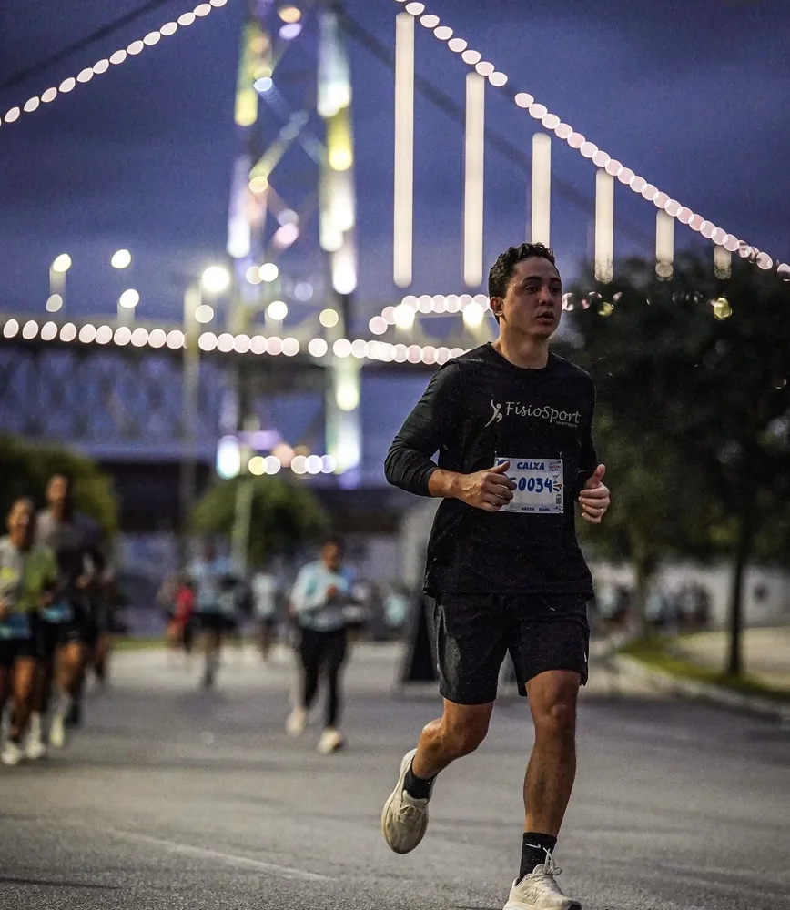

André Silveira
Responsável técnico do clube
Somos uma comunidade de corrida em Santo Amaro da Imperatriz. Da primeira corrida à próxima prova, tem lugar para o seu ritmo.
O encontro da comunidade
Todo sábado, às 06h30, a gente se reúne para um treino coletivo gratuito. Todos os níveis são bem-vindos, inclusive quem nunca correu.
A gente se reúne na tenda e aquece junto antes de sair para correr.
Você corre com quem está no seu ritmo. Se for a sua primeira vez, avise a equipe para encontrar o grupo de iniciantes.
Quem está começando pode fazer o percurso curto no ritmo de conversa. Quem já tem treino próprio pode fazê-lo junto da turma.
Depois da corrida, voltamos à tenda para o café, as frutas e a conversa com a turma.
Encontre seu ritmo
Escolha a opção que mais combina com você hoje.
A galera
Tem gente que chega pelo treino e volta pelos amigos. Toque ou clique nas fotos para ver de perto.
Sobre
O SC Run Club nasceu porque Santo Amaro da Imperatriz tem corredor, mas não tinha clube. Muita gente correndo sozinha, na mesma rua, no mesmo horário, sem se conhecer.
Somos uma comunidade aberta a quem quer correr em companhia, da primeira vez a quem treina para uma maratona. Os encontros de sábado são gratuitos, sem taxa nem mensalidade.
Os treinadores Reginaldo Abreu e Matheus Ohl fazem parte da equipe do clube, ao lado dos profissionais de fisioterapia e nutrição. O acompanhamento individual é opcional e não faz parte da inscrição para o sábado.
Nossa missão
Mais do que correr, queremos conectar pessoas. O SC Run Club nasceu para tornar a corrida mais acessível, incentivar novos hábitos e criar uma comunidade onde todos possam evoluir, independentemente do ritmo ou da experiência.
Acreditamos que o esporte transforma rotinas, aproxima pessoas e que ninguém precisa correr sozinho.
Passo a passo
Abra o convite do WhatsApp e toque em entrar. Por lá, você recebe avisos dos encontros e pode tirar dúvidas com a turma.
Use o formulário abaixo para indicar seu nível. Isso ajuda a equipe a organizar os grupos por ritmo.
Vá à tenda na Rua Salete Broering Becker com tênis, roupa confortável e água. Menores de 18 anos devem ir com um responsável.
Inscrição
O formulário é para o treino. Para acompanhar os avisos, você pode entrar no grupo do WhatsApp sem se inscrever.
O treino coletivo é e sempre vai ser gratuito. Para quem quer acompanhamento individual, o time do clube atende de forma independente.
Planilha individual, controle de ritmo e periodização, para você evoluir sem se quebrar no caminho.
TENHO INTERESSEAvaliação, prevenção e retorno seguro depois da lesão, para você não precisar parar de correr.
TENHO INTERESSEEstratégia alimentar para treino, prova e recuperação, montada em cima do seu volume real de corrida.
TENHO INTERESSEOs serviços são opcionais e contratados diretamente com cada profissional. A participação no treino de sábado não depende deles.
O time
Responsável técnico do clube

Fisioterapeuta esportivo, CREFITO 236466-F
Treinador de corrida, CREF 18590-G/SC
Treinador de corrida, CREF 043539 G/SC
Nutricionista esportivo, CRN10 14648
Dúvidas
Contato
Grupo do WhatsApp
Entrar no grupo do clubeLocal
Rua Salete Broering Becker, Santo Amaro da Imperatriz, SC